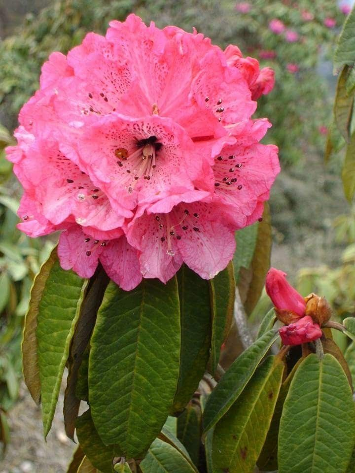
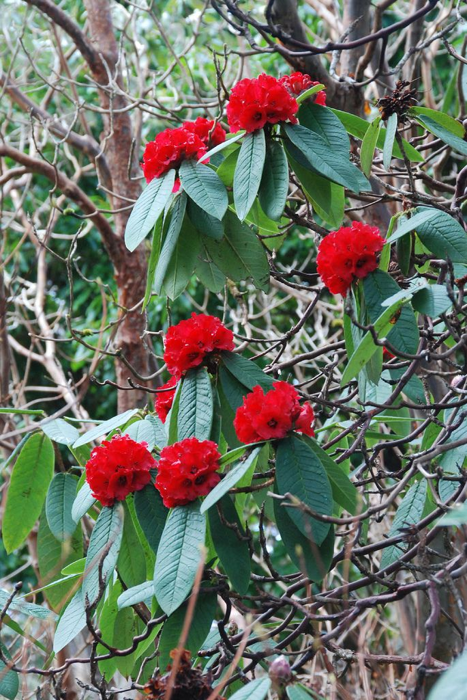
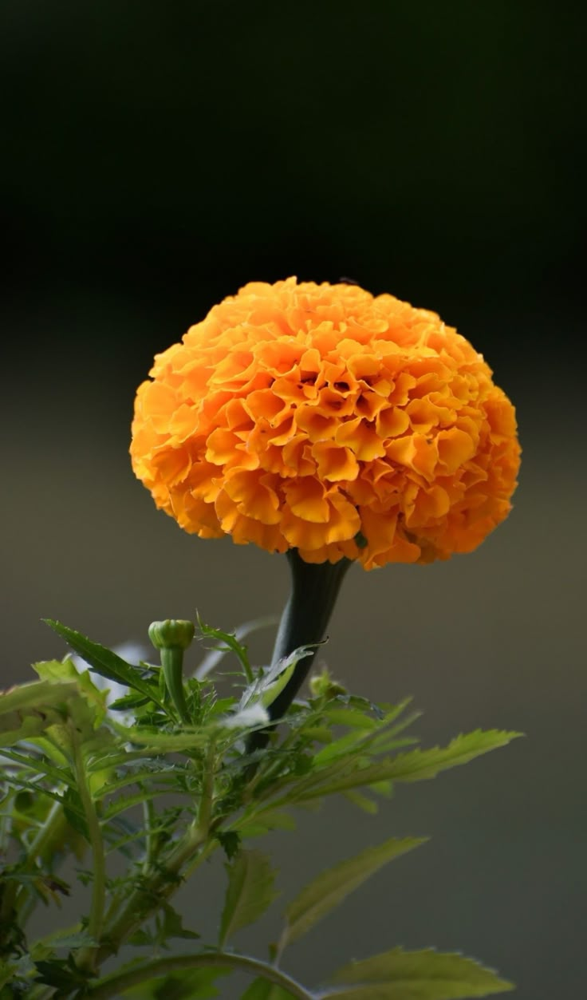
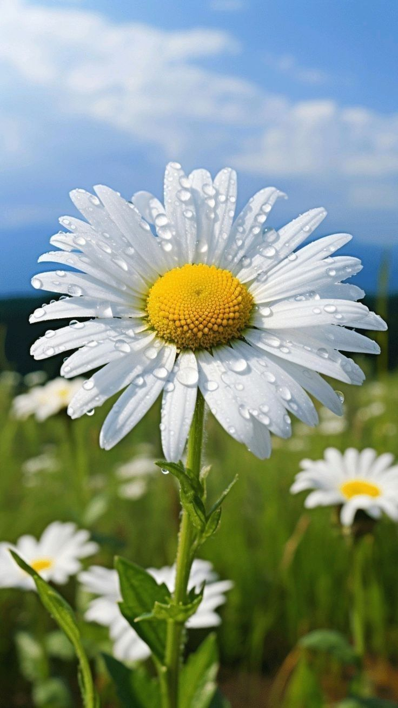

-

Since true blue flowers are quite rare in nature, the blue poppy symbolizes uniqueness, the extraordinary, and the pursuit of rare or special things in life. It is often admired for being elusive and hard to cultivate, adding to its symbolism of something valuable and difficult to attain.
-

Meconopis Betonicifolia
Meconopsis betonicifolia, commonly known as the Himalayan Blue Poppy, is a striking perennial plant native to the high-altitude regions of the Himalayas, particularly found in Tibet and Bhutan.
-

Meconopsis Cambrica
Meconopsis cambrica, commonly known as the Welsh Poppy, is a perennial flowering plant native to western Europe, particularly the British Isles.
-

With its lush, colorful flowers, the rhododendron is often seen as a symbol of beauty, elegance, and abundance. Its blossoms can range from soft pastels to deep, rich hues, evoking grace and splendor in gardens and wild landscapes.
-

Rhododendron Barbatum
Rhododendron barbatum is a stunning species of rhododendron native to the Himalayas, particularly found in regions such as Bhutan, Nepal, and parts of northeastern India.
-

Azaleas Rhododendron
Azaleas are a subgroup within the genus Rhododendron, and they share many similarities with their Rhododendron relatives, but there are some key differences in appearance, growing habits, and care.
-

With its bright, sunny colors, marigolds are often associated with positive emotions such as joy, warmth, and cheerfulness. They are frequently used in celebrations, festivals, and decorations to evoke a sense of happiness and vibrancy.
-

Tagetes Erecta
Tagetes erecta, commonly known as the African Marigold or Aztec Marigold, is a popular annual flowering plant known for its bright, vibrant blooms and its ease of cultivation.
-

Signet Marigold
Signet marigolds produce small, single, daisy-like blooms, usually 1-2 cm (0.5-1 inch) in diameter. The flowers come in bright colors, typically shades of yellow, gold, orange, and occasionally red.
-

Despite its delicate appearance, the garden cosmos is a hardy, resilient flower that can thrive in poor soil conditions and tolerate drought. This makes it a symbol of strength, endurance, and the ability to flourish even in difficult environments.
-

Garden Cosmos
Garden Cosmos (Cosmos bipinnatus), also known simply as Cosmos, is a popular and easy-to-grow flowering plant that adds a delightful, airy touch to gardens with its feathery foliage and bright, daisy-like flowers.
-

Chocolate Cosmos
Chocolate Cosmos (Cosmos atrosanguineus) is a unique and striking perennial flower known for its deep, velvety, reddish-brown blooms and its captivating scent, reminiscent of chocolate—hence its name.
-

Due to the bigleaf hydrangea’s large, rounded flower clusters, the plant is often associated with abundance, prosperity, and wealth. Its bountiful blooms symbolize the idea of overflowing beauty or good fortune, making it a favorite in gardens and floral arrangements for celebrations or special occasions.
-

Smooth Hydrangea
The leaves are large, dark green, and ovate (egg-shaped) with serrated edges. In autumn, the foliage turns yellow before dropping off, adding seasonal interest to the garden.
-

Hydrangea Macrophylla
Hydrangea macrophylla, commonly known as Bigleaf Hydrangea, is one of the most popular and widely grown hydrangeas.
-
.jpeg)
The calla lily is frequently used in weddings as a symbol of marital bliss, true love, and the purity of the union. Its association with beauty and elegance, as well as its representation of new beginnings, makes it an ideal flower for bridal bouquets and wedding arrangements.
-

Pink Calla Lily
Pink Calla Lily (Zantedeschia spp.), specifically referring to varieties like Zantedeschia elegans, is a beautiful and elegant perennial plant known for its striking, trumpet-shaped flowers and lush green foliage.
-

Zantedeschia Elliottiana
Zantedeschia elliottiana (Golden Calla Lily) is a visually stunning and versatile plant that can add beauty and elegance to gardens and floral displays.